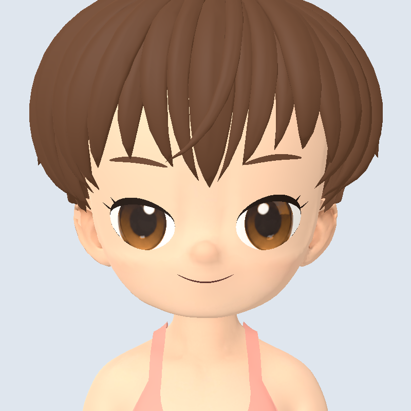
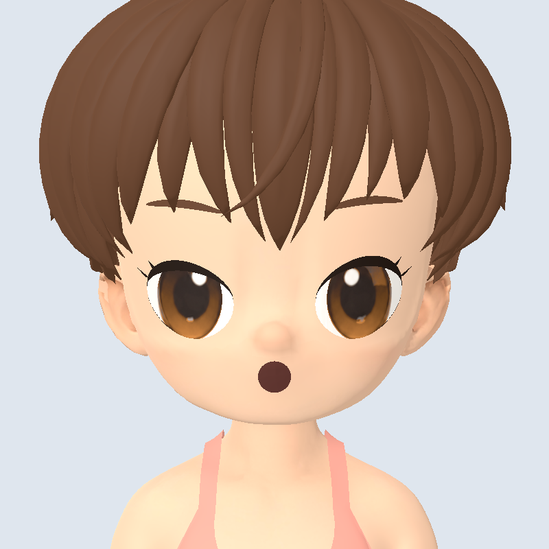
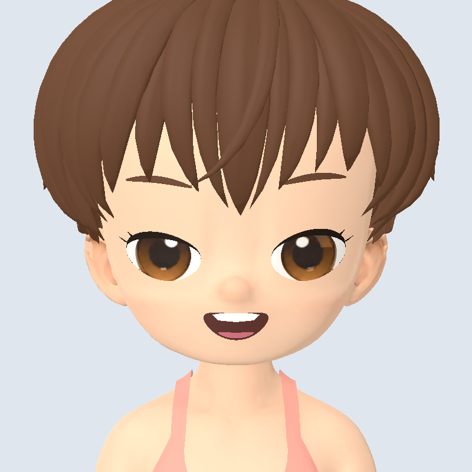

Один персонаж, девять выражений. Снимки настоящей модели в Godot; форма рта, брови и глаза управляются общей системой. Здесь максимальная сила выражения — в игре её можно плавно уменьшать.



Исходники и проверки · API для игр